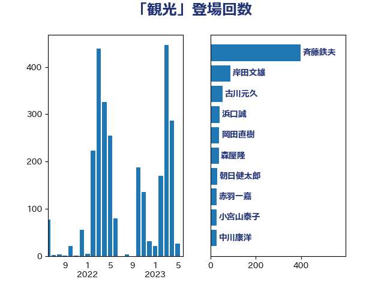

単語「観光」

| 斉藤鉄夫 | 公明党 | 398 回 |
| 岸田文雄 | 自由民主党 | 88 回 |
| 古川元久 | 国民民主党 | 54 回 |
| 浜口誠 | 国民民主党 | 42 回 |
| 岡田直樹 | 自由民主党 | 38 回 |
| 森屋隆 | 立憲民主党 | 37 回 |
| 朝日健太郎 | 自由民主党 | 30 回 |
| 赤羽一嘉 | 公明党 | 29 回 |
| 小宮山泰子 | 立憲民主党 | 28 回 |
| 中川康洋 | 公明党 | 27 回 |
| 中野英幸 | 自由民主党 | 25 回 |
| 渡辺猛之 | 自由民主党 | 24 回 |
| 末松信介 | 自由民主党 | 24 回 |
| 枝野幸男 | 立憲民主党 | 23 回 |
| 山本佐知子 | 自由民主党 | 22 回 |
| 高橋光男 | 公明党 | 21 回 |
| 西銘恒三郎 | 自由民主党 | 19 回 |
| 室井邦彦 | 日本維新の会 | 18 回 |
| 城井崇 | 立憲民主党 | 18 回 |
| 菅家一郎 | 自由民主党 | 16 回 |
| 池下卓 | 日本維新の会 | 16 回 |
| 下条みつ | 立憲民主党 | 16 回 |
| 山本博司 | 公明党 | 15 回 |
| 和田政宗 | 自由民主党 | 15 回 |
| 長浜博行 | 無所属 | 14 回 |
| 自見はなこ | 自由民主党 | 14 回 |
| 三宅伸吾 | 自由民主党 | 14 回 |
| 福田昭夫 | 立憲民主党 | 13 回 |
| 石川香織 | 立憲民主党 | 13 回 |
| 津島淳 | 自由民主党 | 13 回 |
| 泉田裕彦 | 自由民主党 | 13 回 |
| 山口那津男 | 公明党 | 13 回 |
| 高橋千鶴子 | 日本共産党 | 12 回 |
| 金城泰邦 | 公明党 | 12 回 |
| 石井苗子 | 日本維新の会 | 12 回 |
| 河西宏一 | 公明党 | 12 回 |
| 吉井章 | 自由民主党 | 12 回 |
| 伊藤俊輔 | 立憲民主党 | 12 回 |
| 三反園訓 | 無所属 | 12 回 |
| 三上えり | 立憲民主党 | 12 回 |
| 田名部匡代 | 立憲民主党 | 11 回 |
| 永岡桂子 | 自由民主党 | 11 回 |
| 永井学 | 自由民主党 | 11 回 |
| 横沢高徳 | 立憲民主党 | 11 回 |
| 小里泰弘 | 自由民主党 | 11 回 |
| 勝部賢志 | 立憲民主党 | 11 回 |
| 伴野豊 | 立憲民主党 | 11 回 |
| 西村康稔 | 自由民主党 | 10 回 |
| 竹内真二 | 公明党 | 10 回 |
| 神田潤一 | 自由民主党 | 10 回 |
| 渡辺博道 | 自由民主党 | 10 回 |
| 清水貴之 | 日本維新の会 | 10 回 |
| 後藤祐一 | 立憲民主党 | 10 回 |
| 伊藤渉 | 公明党 | 10 回 |
| 野田国義 | 立憲民主党 | 9 回 |
| 西田昭二 | 自由民主党 | 9 回 |
| 若宮健嗣 | 自由民主党 | 9 回 |
| 石橋通宏 | 立憲民主党 | 9 回 |
| 伊波洋一 | 無所属 | 9 回 |
| 中根一幸 | 自由民主党 | 9 回 |
| 中川宏昌 | 公明党 | 9 回 |
| おおつき紅葉 | 立憲民主党 | 9 回 |
| 鈴木義弘 | 国民民主党 | 8 回 |
| 野田聖子 | 自由民主党 | 8 回 |
| 酒井庸行 | 自由民主党 | 8 回 |
| 遠藤良太 | 日本維新の会 | 8 回 |
| 石井浩郎 | 自由民主党 | 8 回 |
| 林芳正 | 自由民主党 | 8 回 |
| 山口俊一 | 自由民主党 | 8 回 |
| 小熊慎司 | 立憲民主党 | 8 回 |
| 伊藤孝江 | 公明党 | 8 回 |
| 道下大樹 | 立憲民主党 | 7 回 |
| 竹谷とし子 | 公明党 | 7 回 |
| 窪田哲也 | 公明党 | 7 回 |
| 穂坂泰 | 自由民主党 | 7 回 |
| 福島伸享 | 無所属 | 7 回 |
| 磯崎仁彦 | 自由民主党 | 7 回 |
| 石井正弘 | 自由民主党 | 7 回 |
| 石井啓一 | 公明党 | 7 回 |
| 村田享子 | 立憲民主党 | 7 回 |
| 木原稔 | 自由民主党 | 7 回 |
| 日下正喜 | 公明党 | 7 回 |
| 今井絵理子 | 自由民主党 | 7 回 |
| 中山展宏 | 自由民主党 | 7 回 |
| たがや亮 | れいわ新選組 | 7 回 |
| 須藤元気 | 無所属 | 6 回 |
| 長谷川岳 | 自由民主党 | 6 回 |
| 鈴木俊一 | 自由民主党 | 6 回 |
| 西野太亮 | 自由民主党 | 6 回 |
| 萩生田光一 | 自由民主党 | 6 回 |
| 芳賀道也 | 国民民主党 | 6 回 |
| 片山さつき | 自由民主党 | 6 回 |
| 浜地雅一 | 公明党 | 6 回 |
| 比嘉奈津美 | 自由民主党 | 6 回 |
| 新垣邦男 | 立憲民主党 | 6 回 |
| 市村浩一郎 | 日本維新の会 | 6 回 |
| 山井和則 | 立憲民主党 | 6 回 |
| 宮崎勝 | 公明党 | 6 回 |
| 青山繁晴 | 自由民主党 | 5 回 |
| 青山大人 | 立憲民主党 | 5 回 |
| 赤嶺政賢 | 日本共産党 | 5 回 |
| 西村明宏 | 自由民主党 | 5 回 |
| 西岡秀子 | 国民民主党 | 5 回 |
| 藤川政人 | 自由民主党 | 5 回 |
| 葉梨康弘 | 自由民主党 | 5 回 |
| 紙智子 | 日本共産党 | 5 回 |
| 田村智子 | 日本共産党 | 5 回 |
| 泉健太 | 立憲民主党 | 5 回 |
| 本田太郎 | 自由民主党 | 5 回 |
| 早稲田ゆき | 立憲民主党 | 5 回 |
| 岩屋毅 | 自由民主党 | 5 回 |
| 小野泰輔 | 日本維新の会 | 5 回 |
| 塩田博昭 | 公明党 | 5 回 |
| 伊藤孝恵 | 国民民主党 | 5 回 |
| 上川陽子 | 自由民主党 | 5 回 |
| 近藤和也 | 立憲民主党 | 4 回 |
| 足立敏之 | 自由民主党 | 4 回 |
| 西村智奈美 | 立憲民主党 | 4 回 |
| 藤巻健太 | 日本維新の会 | 4 回 |
| 菊田真紀子 | 立憲民主党 | 4 回 |
| 茂木敏充 | 自由民主党 | 4 回 |
| 石川昭政 | 自由民主党 | 4 回 |
| 渡辺創 | 立憲民主党 | 4 回 |
| 早坂敦 | 日本維新の会 | 4 回 |
| 庄子賢一 | 公明党 | 4 回 |
| 広瀬めぐみ | 自由民主党 | 4 回 |
| 岸真紀子 | 立憲民主党 | 4 回 |
| 山本剛正 | 日本維新の会 | 4 回 |
| 寺田学 | 立憲民主党 | 4 回 |
| 嘉田由紀子 | 無所属 | 4 回 |
| 佐藤英道 | 公明党 | 4 回 |
| 佐々木さやか | 公明党 | 4 回 |
| 井上哲士 | 日本共産党 | 4 回 |
| 五十嵐清 | 自由民主党 | 4 回 |
| 串田誠一 | 日本維新の会 | 4 回 |
| 中島克仁 | 立憲民主党 | 4 回 |
| 高木毅 | 自由民主党 | 3 回 |
| 鎌田さゆり | 立憲民主党 | 3 回 |
| 鈴木敦 | 国民民主党 | 3 回 |
| 金子恵美 | 立憲民主党 | 3 回 |
| 金子恭之 | 自由民主党 | 3 回 |
| 重徳和彦 | 立憲民主党 | 3 回 |
| 里見隆治 | 公明党 | 3 回 |
| 舩後靖彦 | れいわ新選組 | 3 回 |
| 美延映夫 | 日本維新の会 | 3 回 |
| 礒崎哲史 | 国民民主党 | 3 回 |
| 牧原秀樹 | 自由民主党 | 3 回 |
| 渡辺周 | 立憲民主党 | 3 回 |
| 清水真人 | 自由民主党 | 3 回 |
| 杉田水脈 | 自由民主党 | 3 回 |
| 後藤茂之 | 自由民主党 | 3 回 |
| 平将明 | 自由民主党 | 3 回 |
| 島尻安伊子 | 自由民主党 | 3 回 |
| 岬麻紀 | 日本維新の会 | 3 回 |
| 尾身朝子 | 自由民主党 | 3 回 |
| 小田原潔 | 自由民主党 | 3 回 |
| 小森卓郎 | 自由民主党 | 3 回 |
| 小島敏文 | 自由民主党 | 3 回 |
| 寺田静 | 無所属 | 3 回 |
| 大石あきこ | れいわ新選組 | 3 回 |
| 北神圭朗 | 無所属 | 3 回 |
| 勝俣孝明 | 自由民主党 | 3 回 |
| 保岡宏武 | 自由民主党 | 3 回 |
| 中野洋昌 | 公明党 | 3 回 |
| 上月良祐 | 自由民主党 | 3 回 |
| 齋藤健 | 自由民主党 | 2 回 |
| 高野光二郎 | 自由民主党 | 2 回 |
| 高見康裕 | 自由民主党 | 2 回 |
| 高橋英明 | 日本維新の会 | 2 回 |
| 高木陽介 | 公明党 | 2 回 |
| 馬場伸幸 | 日本維新の会 | 2 回 |
| 青木愛 | 立憲民主党 | 2 回 |
| 門山宏哲 | 自由民主党 | 2 回 |
| 長妻昭 | 立憲民主党 | 2 回 |
| 長友慎治 | 国民民主党 | 2 回 |
| 鈴木英敬 | 自由民主党 | 2 回 |
| 鈴木庸介 | 立憲民主党 | 2 回 |
| 鈴木宗男 | 日本維新の会 | 2 回 |
| 逢坂誠二 | 立憲民主党 | 2 回 |
| 谷合正明 | 公明党 | 2 回 |
| 若林洋平 | 自由民主党 | 2 回 |
| 舞立昇治 | 自由民主党 | 2 回 |
| 竹内譲 | 公明党 | 2 回 |
| 石田昌宏 | 自由民主党 | 2 回 |
| 石垣のりこ | 立憲民主党 | 2 回 |
| 白石洋一 | 立憲民主党 | 2 回 |
| 田村まみ | 国民民主党 | 2 回 |
| 田中健 | 国民民主党 | 2 回 |
| 玉木雄一郎 | 国民民主党 | 2 回 |
| 牧島かれん | 自由民主党 | 2 回 |
| 熊谷裕人 | 立憲民主党 | 2 回 |
| 滝沢求 | 自由民主党 | 2 回 |
| 湯原俊二 | 立憲民主党 | 2 回 |
| 浅尾慶一郎 | 自由民主党 | 2 回 |
| 池畑浩太朗 | 日本維新の会 | 2 回 |
| 江島潔 | 自由民主党 | 2 回 |
| 森田俊和 | 立憲民主党 | 2 回 |
| 森屋宏 | 自由民主党 | 2 回 |
| 梅谷守 | 立憲民主党 | 2 回 |
| 松野明美 | 日本維新の会 | 2 回 |
| 松村祥史 | 自由民主党 | 2 回 |
| 松川るい | 自由民主党 | 2 回 |
| 東国幹 | 自由民主党 | 2 回 |
| 杉本和巳 | 日本維新の会 | 2 回 |
| 木村次郎 | 自由民主党 | 2 回 |
| 新妻秀規 | 公明党 | 2 回 |
| 斎藤嘉隆 | 立憲民主党 | 2 回 |
| 徳永エリ | 立憲民主党 | 2 回 |
| 岡本あき子 | 立憲民主党 | 2 回 |
| 山岸一生 | 立憲民主党 | 2 回 |
| 山口壯 | 自由民主党 | 2 回 |
| 小林鷹之 | 自由民主党 | 2 回 |
| 小山展弘 | 立憲民主党 | 2 回 |
| 宮路拓馬 | 自由民主党 | 2 回 |
| 宮本岳志 | 日本共産党 | 2 回 |
| 宮口治子 | 立憲民主党 | 2 回 |
| 宮下一郎 | 自由民主党 | 2 回 |
| 大口善徳 | 公明党 | 2 回 |
| 堀場幸子 | 日本維新の会 | 2 回 |
| 国定勇人 | 自由民主党 | 2 回 |
| 吉田統彦 | 立憲民主党 | 2 回 |
| 加藤勝信 | 自由民主党 | 2 回 |
| 加田裕之 | 自由民主党 | 2 回 |
| 伊佐進一 | 公明党 | 2 回 |
| 仁比聡平 | 日本共産党 | 2 回 |
| 中川郁子 | 自由民主党 | 2 回 |
| 世耕弘成 | 自由民主党 | 2 回 |
| 上田英俊 | 自由民主党 | 2 回 |
| 上田清司 | 国民民主党 | 2 回 |
| 上杉謙太郎 | 自由民主党 | 2 回 |
| ながえ孝子 | 無所属 | 2 回 |
| あかま二郎 | 自由民主党 | 2 回 |
| 鶴保庸介 | 自由民主党 | 1 回 |
| 鳩山二郎 | 自由民主党 | 1 回 |
| 高階恵美子 | 自由民主党 | 1 回 |
| 高良鉄美 | 無所属 | 1 回 |
| 高木真理 | 立憲民主党 | 1 回 |
| 青島健太 | 日本維新の会 | 1 回 |
| 階猛 | 立憲民主党 | 1 回 |
| 長島昭久 | 自由民主党 | 1 回 |
| 鈴木貴子 | 自由民主党 | 1 回 |
| 野村哲郎 | 自由民主党 | 1 回 |
| 進藤金日子 | 自由民主党 | 1 回 |
| 輿水恵一 | 公明党 | 1 回 |
| 足立康史 | 日本維新の会 | 1 回 |
| 赤澤亮正 | 自由民主党 | 1 回 |
| 豊田俊郎 | 自由民主党 | 1 回 |
| 谷田川元 | 立憲民主党 | 1 回 |
| 谷公一 | 自由民主党 | 1 回 |
| 蓮舫 | 立憲民主党 | 1 回 |
| 荒井優 | 立憲民主党 | 1 回 |
| 舟山康江 | 国民民主党 | 1 回 |
| 羽田次郎 | 立憲民主党 | 1 回 |
| 緒方林太郎 | 無所属 | 1 回 |
| 緑川貴士 | 立憲民主党 | 1 回 |
| 細田健一 | 自由民主党 | 1 回 |
| 笹川博義 | 自由民主党 | 1 回 |
| 稲津久 | 公明党 | 1 回 |
| 稲富修二 | 立憲民主党 | 1 回 |
| 福重隆浩 | 公明党 | 1 回 |
| 神谷政幸 | 自由民主党 | 1 回 |
| 神津たけし | 立憲民主党 | 1 回 |
| 石川大我 | 立憲民主党 | 1 回 |
| 石原正敬 | 自由民主党 | 1 回 |
| 石原宏高 | 自由民主党 | 1 回 |
| 矢倉克夫 | 公明党 | 1 回 |
| 田村貴昭 | 日本共産党 | 1 回 |
| 田所嘉徳 | 自由民主党 | 1 回 |
| 甘利明 | 自由民主党 | 1 回 |
| 片山大介 | 日本維新の会 | 1 回 |
| 滝波宏文 | 自由民主党 | 1 回 |
| 源馬謙太郎 | 立憲民主党 | 1 回 |
| 深澤陽一 | 自由民主党 | 1 回 |
| 浮島智子 | 公明党 | 1 回 |
| 河野義博 | 公明党 | 1 回 |
| 江田憲司 | 立憲民主党 | 1 回 |
| 水岡俊一 | 立憲民主党 | 1 回 |
| 武井俊輔 | 自由民主党 | 1 回 |
| 橘慶一郎 | 自由民主党 | 1 回 |
| 橋本岳 | 自由民主党 | 1 回 |
| 横山信一 | 公明党 | 1 回 |
| 梶原大介 | 自由民主党 | 1 回 |
| 根本匠 | 自由民主党 | 1 回 |
| 柚木道義 | 立憲民主党 | 1 回 |
| 松野博一 | 自由民主党 | 1 回 |
| 松山政司 | 自由民主党 | 1 回 |
| 木村英子 | れいわ新選組 | 1 回 |
| 木原誠二 | 自由民主党 | 1 回 |
| 星野剛士 | 自由民主党 | 1 回 |
| 平沼正二郎 | 自由民主党 | 1 回 |
| 平山佐知子 | 無所属 | 1 回 |
| 平口洋 | 自由民主党 | 1 回 |
| 岩渕友 | 日本共産党 | 1 回 |
| 山田賢司 | 自由民主党 | 1 回 |
| 山田勝彦 | 立憲民主党 | 1 回 |
| 山崎誠 | 立憲民主党 | 1 回 |
| 山岡達丸 | 立憲民主党 | 1 回 |
| 山下芳生 | 日本共産党 | 1 回 |
| 小泉進次郎 | 自由民主党 | 1 回 |
| 小林茂樹 | 自由民主党 | 1 回 |
| 小林一大 | 自由民主党 | 1 回 |
| 小川淳也 | 立憲民主党 | 1 回 |
| 小寺裕雄 | 自由民主党 | 1 回 |
| 宮本徹 | 日本共産党 | 1 回 |
| 奥野総一郎 | 立憲民主党 | 1 回 |
| 大野泰正 | 自由民主党 | 1 回 |
| 大島敦 | 立憲民主党 | 1 回 |
| 大塚耕平 | 国民民主党 | 1 回 |
| 堂込麻紀子 | 無所属 | 1 回 |
| 堀井巌 | 自由民主党 | 1 回 |
| 堀井学 | 自由民主党 | 1 回 |
| 坂本哲志 | 自由民主党 | 1 回 |
| 土田慎 | 自由民主党 | 1 回 |
| 和田義明 | 自由民主党 | 1 回 |
| 和田有一朗 | 日本維新の会 | 1 回 |
| 吉田豊史 | 無所属 | 1 回 |
| 吉川元 | 立憲民主党 | 1 回 |
| 古川禎久 | 自由民主党 | 1 回 |
| 古川康 | 自由民主党 | 1 回 |
| 加藤鮎子 | 自由民主党 | 1 回 |
| 前川清成 | 日本維新の会 | 1 回 |
| 伊藤忠彦 | 自由民主党 | 1 回 |
| 伊東良孝 | 自由民主党 | 1 回 |
| 中条きよし | 日本維新の会 | 1 回 |
| 中川正春 | 立憲民主党 | 1 回 |
| 三浦靖 | 自由民主党 | 1 回 |
| 一谷勇一郎 | 日本維新の会 | 1 回 |
| こやり隆史 | 自由民主党 | 1 回 |